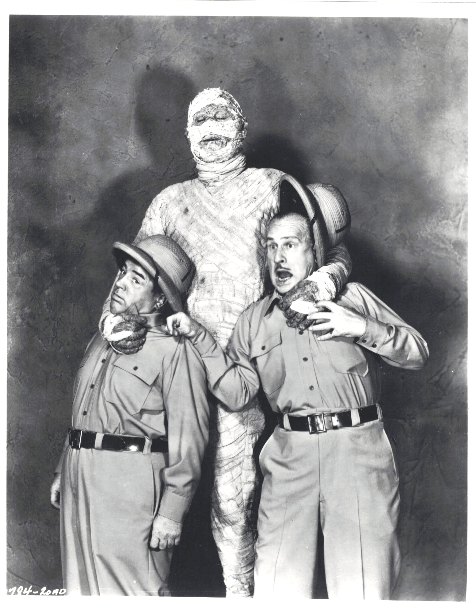

Product No. HEC-0043
$14.99
Shipping: $8.95
Description
8x10 B&W photograph
Full Description
Abbott and Costello were an American comedy team consisting of Bud Abbott (Deceased) and Lou Costello (Deceased), one of the most successful comedy partnerships in entertainment history. They became famous for rapid-fire wordplay, misunderstandings, slapstick humor, and carefully timed routines. Bud Abbott, born William Alexander Abbott on October 2, 1897, generally played the confident, fast-talking straight man. Lou Costello, born Louis Francis Cristillo on March 6, 1906, played the excitable, confused comic character. Their contrasting personalities made them an ideal team. They first became popular in vaudeville and radio before moving into motion pictures. Their breakthrough film was "Buck Privates" (1941), which was followed by a long series of successful comedies including "In the Navy," "Hold That Ghost," "Who Done It?," "The Naughty Nineties," and "Abbott and Costello Meet Frankenstein." They also appeared with several famous Universal movie monsters, including Dracula, the Wolf Man, and the Mummy. Their most famous comedy routine, "Who's on First?," became one of the best-known sketches in American comedy history. The routine centers on a baseball team whose players have confusing names such as Who, What, and I Don't Know. Abbott and Costello also starred in radio and television programs and remained major entertainers throughout the 1940s and 1950s. Lou Costello died on March 3, 1959, and Bud Abbott died on April 24, 1974. Their films and comedy routines remain popular with classic movie fans and collectors of vintage entertainment memorabilia.
Condition
Excellent condition